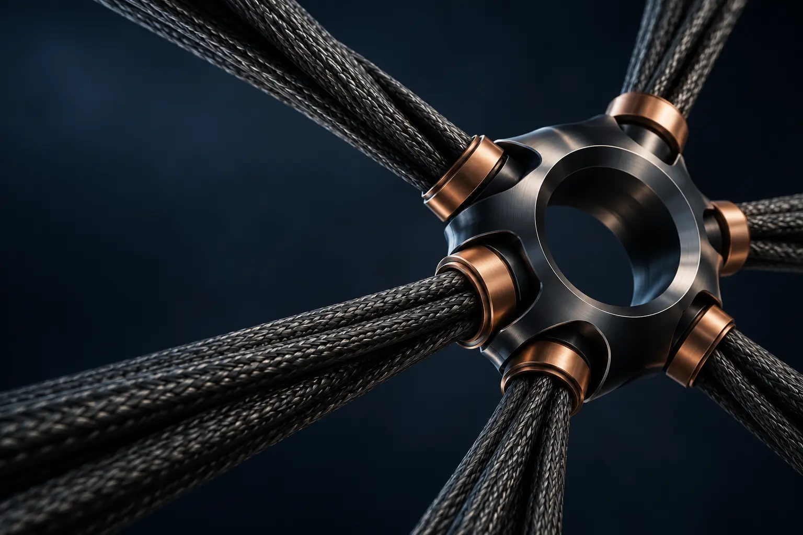

State the assumptions.
Define the configuration, load case and boundaries before drawing a conclusion.
04 / COMPANY
TensileEra is the tensile-lift technology brand of Kunfirm Innovative Services LLC (KTX), developing rotary-wing architectures around tension-based load paths.
THE PURPOSE
TensileEra investigates an alternative to rigid rotor structures: flexible members stiffened through rotation, integrated with distributed propulsion and control.
The work is multidisciplinary. Structural mechanics, aeroelasticity, power electronics, real-time controls and manufacturing all contribute to the behavior of the complete aircraft.

HOW WE WORK
Define the configuration, load case and boundaries before drawing a conclusion.
Address interfaces between structure, power and control as system-level engineering work.
Keep design objectives, analytical results and measured behavior distinct.
CORPORATE INFORMATION
WORK WITH TENSILEERA
Explore engineering opportunities or discuss a technical collaboration.